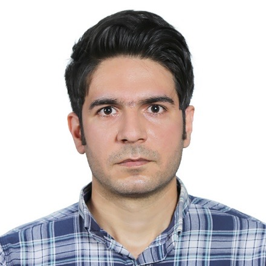

PhD Student
Milad Mozarfarifard
Biography
Mr. Milad Mozafarifard joined our research team in fall 2021, focusing on thermal transport in materials under laser irradiation. He earned his B.Sc. in Mechanical Engineering from IAU and his M.Sc. in Energy Conversion from SCU in 2011 and 2017, respectively. Prior to joining us, he worked as an independent researcher, publishing in peer-reviewed journals like IJHMT, ICHMT, SE, and HMT. He is also a reviewer for International Communications in Heat and Mass Transfer and the Journal of Mechanical Engineering. Milad won the 2nd-place award in the ME Graduate Student Poster Contest in both 2022 and 2023 at the University of Nevada, Reno.